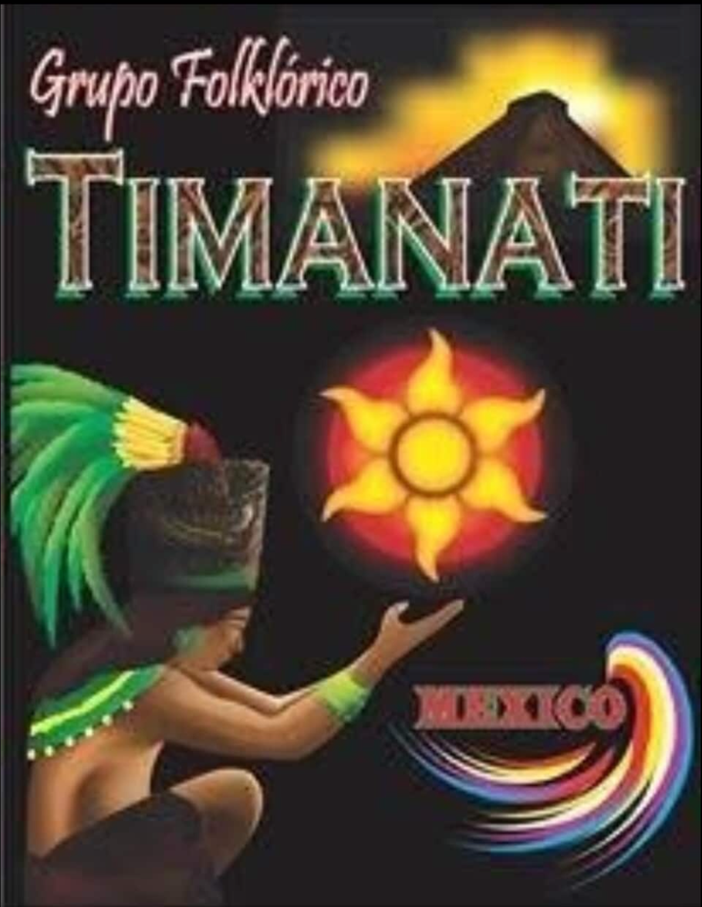
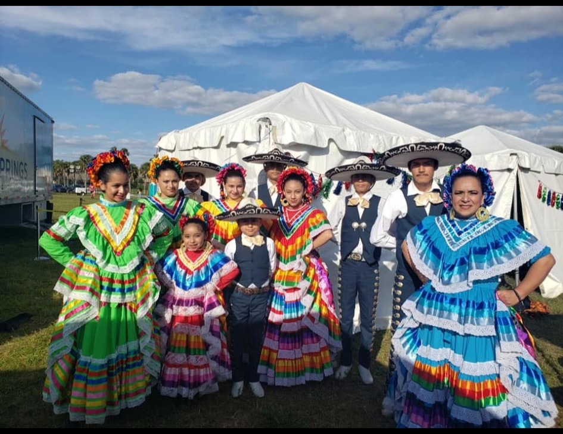
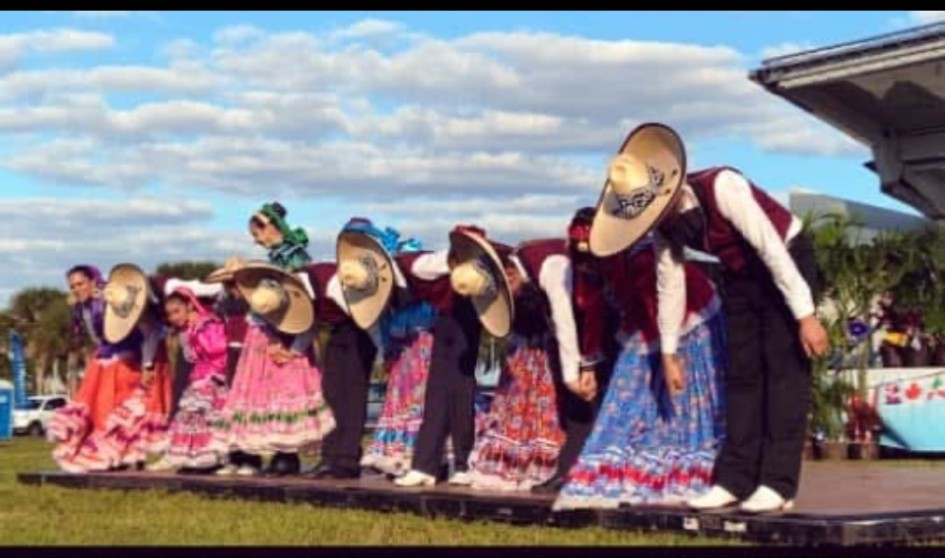
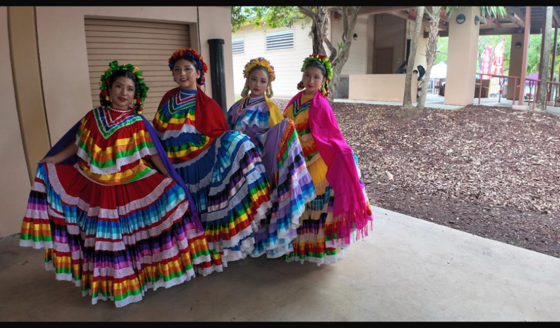
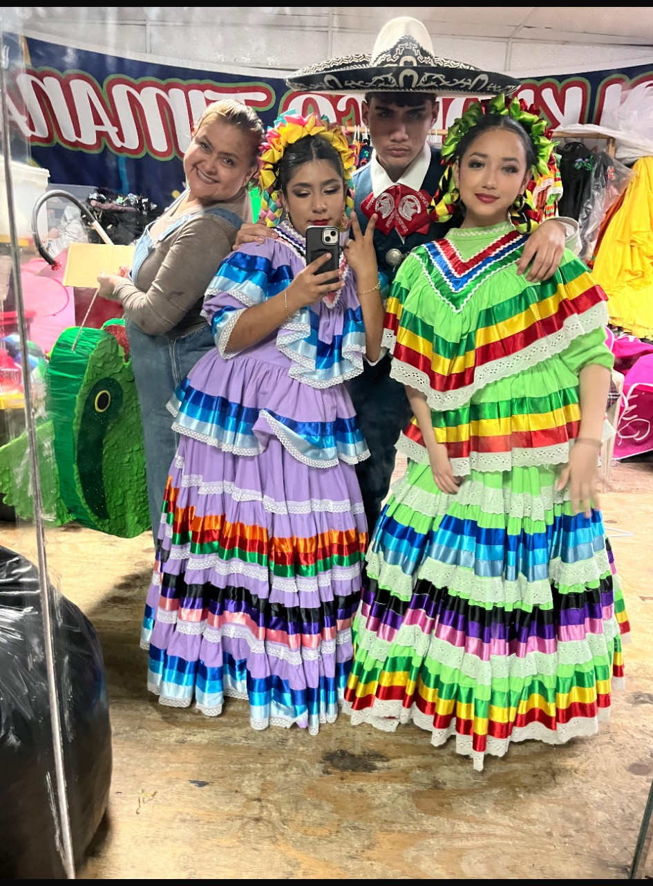
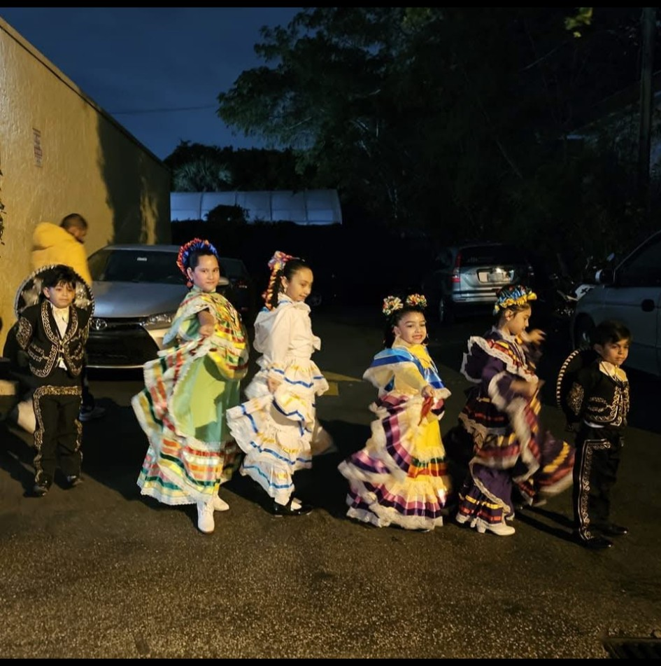
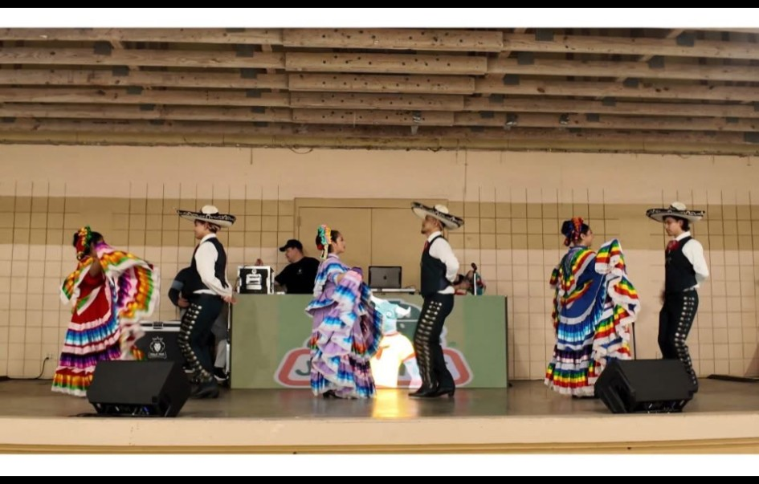
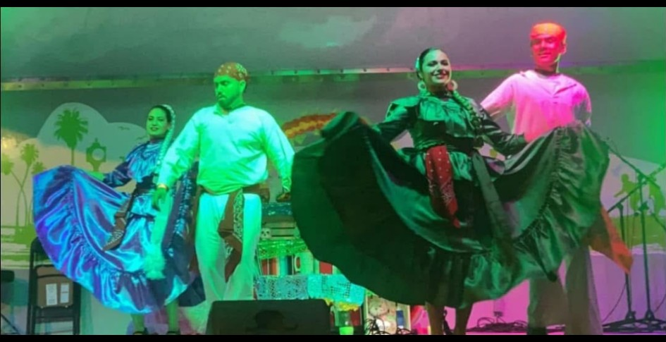
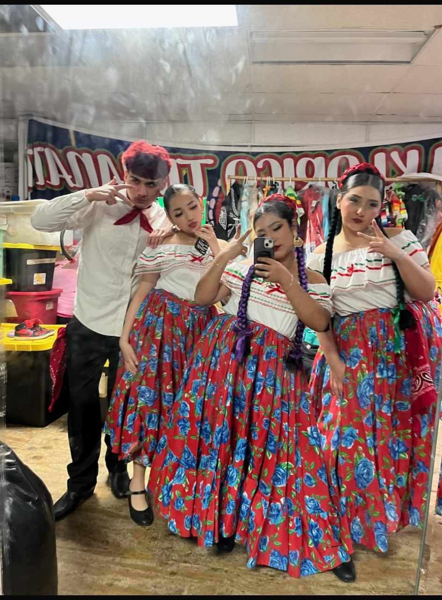

01
Culture
Teaching traditional Mexican folklore and helping young dancers understand and appreciate where the dances come from.

Grupo Folklórico TimanatiNonprofit • Pompano Beach, Florida
For 13 years, Grupo Folklórico Timanati has shared the beauty of traditional Mexican folklore while helping children grow into confident, disciplined, and responsible young adults.
About Timanati
Grupo Folklórico Timanati is a nonprofit organization located in Pompano Beach, Florida. Our focus is teaching traditional Mexican folklórico dances from different regions of Mexico and passing those traditions on to the next generation.
Dance is only part of what we do. We work to develop children into great young adults by teaching teamwork, discipline, responsibility, confidence, respect, and pride in Mexican culture. Along the way, our dancers build friendships and memories they can carry with them for life.
Our Repertoire
Our dancers learn traditional choreography, music, styling, and cultural expression from many Mexican states and regions.
More Than Dance
Teaching traditional Mexican folklore and helping young dancers understand and appreciate where the dances come from.
Developing discipline, confidence, teamwork, responsibility, respect, and commitment through rehearsals and performances.
Creating a positive environment where dancers build friendships, perform together, and make memories that last for years.
Gallery
A look at Grupo Folklórico Timanati through the years — performances, costumes, community events, and the next generation of dancers.








Visit or Contact Us
Contact Grupo Folklórico Timanati for information about classes, performances, community events, and joining the group.